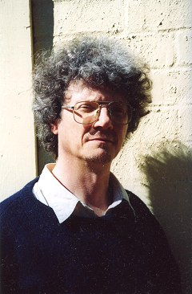

Alan Gould was born in London and has lived in Australia since 1966. He worked as a nuclear physics technician and agricultural labourer before becoming a full-time writer, occasionally teaching and writing journalism. He has published numerous volumes of poetry and fiction including the novel To the Burning City (1991). His work has been awarded the Kenneth Slessor Prize for Poetry (1981), the Foundation for Australian Literary Studies Best Book of the Year Award (1985), the National Book Council Banjo Award for Fiction (1992) and the Royal Blind Society Audio Book of the Year Award (1999). More information can be found at his website.
PS: Raised as I was on C. S. Forester’s Hornblower series of novels, and later addicted to the work of Herman Melville and particularly Joseph Conrad, I’ve been very responsive to your sea-faring poems and novels like The Man Who Stayed Below. This latter, with its Conradian feel, was remarkable and enjoyable too for its Australian idiom. What caused your attraction to such material? What makes your imagination respond to it?
AG: Whatever enchantment it was, Paul, it had taken a hold on me long before I came to Conrad in my teens, or Forester and Melville a little later, and this maritime polarizing of my imagination remains a little obscure to me.
My power to recollect my life cuts in at about the age of three, and yet I also know, being a first grandchild in my mother’s family, I was taken up to Akureyri in Iceland in 1951, prior to any sense I had of being a self. There are photographs to show I patted a sheep in a treeless landscape, and that my relatives, whose language I have never learned, welcomed me as a grandchild into their home, a home that faced the tranquil mirror waters of Eyjafjord in Northern Iceland. My point is this. While I know for certain I can recollect nothing from this visit, I am aware its imagery and sensual impressions are likely to exert obscure pressures on the formation of my consciousness, the more so for being inchoate.
These formative pressures might be earlier still. There is some probability I was present in my mother’s womb when she made a return to Iceland in the late 1940s aboard an opportune small Icelandic fishing trawler. Only once did she describe this stormy voyage, watching from below as the Atlantic beat down on a skylight. I wish now I had asked her the exact date of this. I have always found the movement of a deck beneath me to be a congenial sensation, but cannot say for certain the perceptions of pitch, scend and roll were first sensed by the embryo Gould on the North Atlantic in the nine months prior to my birth in March 1949. However, when it comes to the growth of imagining, to be informed is not so vital as to be tantalised. I grew up with this story and might have been a part of it. So I elaborate around my possible presence in a small, tossed vessel, teased by whether the event was factual or otherwise. The ‘might-have-been’ is the charged stuff in any child’s imagining and self-fashioning.
As it happens, lifelong my mother recoiled from the sea. Growing up beside the fjord, was to wait among the anguished as the drowned were brought back, or not, to their small fjord communities. By contrast, when I made my second visit to Akureyri in 1954, aged five, this fjord, its ships and boats, mesmerised me. The arrivals and departures of the two steamers aroused some odd sensation in me of the near and the far being enclosed in the one idea. There was a small yellow fishing boat that lay on its side out in the fjord, and the apparent distress of this vessel haunted me in the sleepless summer nights when it never got dark; I did not understand about ebb and flood tides, or midnight sun. In the morning I would go down to the shore of black sand and push the rowing boats out onto the mirror water until they reached the ends of their mooring ropes, then haul them back in, fascinated by the smoothness of their glide and the fact that I, a little person, could control something so monstrous. I have described this in an essay called ‘A Not Quite reachable Time.’ (The Totem Ship, Duffy And Snelgrove 1996)
By the time I was in my teens and, having forsaken the wish to go soldiering for oil-painting, I found maritime substance invariably gave me a sharper exhilaration than other subjects because somehow it enabled me to inhabit a dimension of being, at once more reaching, more particular, and more whole. Obscurely I wanted those three attributes in whatever it was I would commit my time to, but I could not account for why I wanted this.
To come to Conrad: I read his Lord Jim at 16, and then most of the rest of the novelist’s work during first year university in 1968. His appeal to me lay in the very fabric of the life he depicted in his maritime stories. His prose, which is to say his speaking voice, had a texture which, put simply, I wanted to be with. His nautical imagery and characterisation were always sharp, yet discreet. The sensibility of an era was exquisitely drawn, and the moral complexity arising from it scrupulously watched. Above all, pervading the stories, there was such a fine propriety in the way the sea itself, in all its instability and reflectiveness, gave this fabric of life its condition. Here was reach, particularity and wholeness, and through Conrad I started to learn why my own take on experience might have this maritime leaning. I have, among my poems, a homage to Conrad, and he appears briefly as a character in a later poem (‘A Timeshot — Joseph Conrad In Picture’).
Oddly enough, though I read C.S. Forester and later some Patrick O’Brien, they failed to move me at all. After Conrad’s intricate fabric, it was maritime non-fiction that I absorbed: Lubbock, Newby, Villiers and a host of others. Indeed, I am often moved by true accounts of sea-life that are very much more coarsely written than the competent fictions of Forester and O’Brien.
But maritime substance was not my first subject. I came to it after Iceland. My earliest poems, of ‘The Skald Mosaic’, are about solitary types in solitary communities. I was trying to describe the oppression of feeling isolated from love, and the fragility of human contact. The provenance of the emotions in this poem-sequence derives undoubtedly from my bleak six year durance at a boarding school in Britain. But ‘the secret working mind’ as Yeats calls it, looked for a setting that would find home for an emotional perplexity in its most expressive physical environment. My ‘inchoate’ Iceland was the natural ground for this. (After publishing the ‘Mosaic’ sequence in my first book, I grew discontented with its juvenile crudity, but could not quite scrap it. Then, in 2006 I re-composed it entirely, using some of the skaldic meters more rigorously, and look one day to include it in a Collected Poems.)
My first poems about maritime matters, written in 1978, were contained in a sequence, ‘Marine Photographs’, based on pictures I had found in the shipping books by Basil Lubbock. Their purpose, as it evolved, was to find various voices that could express the sensation of what it was to be conscious of fate, and this the dozen speakers of these poems do, each with their own colouring, and tagged to particular sailing vessels of the later nineteenth century. When I wrote my second sequence of maritime poems, ‘The End Of Sail’, I took just one voice, and this man looks at his experience in the consciousness that an age-old craft is vanishing from the world, a passing that seems to highlight the fragile status of experience itself. (It was written during the relative high unemployment of the Malcolm Fraser ministry). Again the view is fatalist, but watchful of its fatalism. Unfashionably, I have looked for the heroic voice in an era that does not tolerate the persistence of such a thing in poetry, and this is where I find it, the attitude that squares up to the loss of what has been valued, but knows what that was, and the immense scale of things beside which value asserts its modest, resilient profile.
From these two maritime beginnings, I have written three further sequences and two novels concerned with the sea. On each occasion I have tried to match the oceanic milieu with meditations on subjects for which, I believed, the sea would be an effective and versatile metaphor. So ‘The History of Shipping’ for instance, takes the development of sea-craft as a meditation on the extension of human imagination. ‘The Calm’ takes another look at the transience of all matter and introduces the persistence of a Christ-like presence. By the time I wrote my first novel, The Man Who Stayed Below, I was a ship-modeller, finding relief from verbal matters each afternoon in this practical pastime. But everything is related. So I learned from framing, planking and rigging how the interdependence of a vessel’s parts parallel the tense cohesion of parts in a poem or novel. And when I required a barque or a topsail schooner as a setting for my fictions, I knew every rope and ringbolt.
I have written a couple of essays that address directly my perplexity as to why this maritime interest has stayed with me — ‘The Totem Ship’ is about ship-modelling, and ‘Bolero And The Sea’ tries to identify what I call ‘the history emotion’. But I am not sure I am at the bottom of the mystery yet, nor that I wish to be. This is a long answer to your simple question, Paul.
PS: What fictive devices and techniques do you owe to Conrad?
AG: I was very drawn to Conrad’s configurations with Time in his novels and shorter works, because his flashbacks and other disarrangements of linear time seemed to make the fabric of his narrative more immediate as a facsimile of our temporal processing; we experience time as consciousness receives it rather than as the clock delivers it. So I try to give time an actual texture in both my fiction and my poetry. Woolf, White and Faulkner have all been instructive in this, and more mischievously, Nabokov. But Conrad’s avowal that he wanted ‘by the power of the written word to make you hear, to make you feel — it is, before all to make you see,’ is advice I try never to stray far from.
PS: What other authors have influenced your craft as a novelist?
AG: I would invoke the four names in the paragraph above, and behind them the ruminations of Bergson on Time. Emily Bronte’s Wuthering Heights won me, partly because of that framing flashback technique in the novel, but also where she allows us to glimpse an utterly savage amoral power when Heathcliff repudiates Cathy’s attempt to have him leave his revenges to God, and he rejoins, ‘God will not have the satisfaction I will.’ Here, in an instant, all civil society is cancelled, and yet we, decent citizens all, feel it to be resoundingly just. This is to introduce moral startlement into a fictional world, and moral vitality of this kind attracts me, exercises me to relocate where the peace might lie. I tried this theme in The Man Who Stayed Below, tapped the power but did not, I think, locate the peace. In his astonishing poem, ‘The Fire-Bombing’, James Dickey achieves both, the unblinking view of hell and the place of rest in the human conscience for the man who has been troubled by his part in causing it.
Back to influence. The Icelandic family sagas also drew me in entirely: Njal’s, Laxdaela, Grettir, Egil’s The Vinland Sagas, and others. Here was a world where the landscape was at one with the spareness of the manners and the fatalism of the attitudes. I welcomed a narrative where the deaths of important characters were not necessarily climactic, and where the stories I was reading were related to actual folk who survived as presences because of the saga witness of their lives.
In truth, I look out for tips useful to my own art from as wide a range as my reading allows. Someone said ‘influence’ is like influenza, and I have probably caught things from Dickens, Waugh, Boyd, Lawrence, Hazzard, Defoe, the picaresques, the Russians, the French, and so on, in addition to the above-named writers.
PS: In your novels and many of your poems (such as ‘The Freedom of the Seas’, ‘The Observed Observer’, ‘An Interrogator’s Opening Remarks’, or ‘Moments at a Window’) there are strands of thematic material relating to the notions of watching and being watched. Worlds not unlike Hamlet’s Elsinore are evoked where reflective halls of metaphoric mirrors are set up, where people watch, and are watched watching. Why this interest in the imagery and psychology of watchfulness?
AG: Perhaps because I am someone all too prone to blurt, I find the restraint of human attentiveness a very attractive quality — ‘the holiness of a watchful face’ as I refer to it in a haiku. Why? The quality of attention seems to conjoin an aliveness of mind as to what is actually happening, with a patience to take reality in as it presents itself. This quality is not invariably holy. Neal, in my Close Ups, is a watchful gent, but his watchfulness proceeds from something ill and malicious. The watching you refer to in Hamlet points to the fact that every human relationship in the play, excepting that between the prince and Horatio, is defiled in some way. In this play, indeed throughout Shakespeare, the quality of a character’s watching discloses the calibre of an intelligence, and this, I think, is the secret to how we come to know Shakespeare’s characters with such intimacy and wholeness. The Bard sets a brilliant standard. In my own characterization, when I come to ask myself how my characters, like Shel in Close Ups, Viv in Tazyrik, Sarah in Schoonermaster, Alec and Viva in my recent Lakewoman, continue to pull my heartstrings after I have finished their respective stories, it is to do with this tension between the intimacy and wholeness of how I have come to know an intelligence. The manner of a person’s attentiveness invites us into their pathos because we come close to how the world closely affects them. It also illumines their transcendence on occasion, how they resist blurting in order to understand.
PS: In The Tazyrik Year and Close Ups the notion of observation is linked (it seems to me) to that of imagination. Observation, history, memory and imagination all seem to be aspects of the one process. Obviously history and memory provide rich material for your art, to the extent that your collection of poems is called The Past Completes Me (a phrase which also occurs in your novel The Tazyrik Year). So many of your poems are about various pasts: historical, personal, artistic, racial (‘my Viking blood’ from ‘Amor Fati’), cultural. What does history mean to you in relation to your poetic and fictive arts?
AG: ‘Various pasts,’ Paul? O, I think there is only the one integral past where the various is always whole. We observe it, we remember it, we imagine it, and these mental powers elide with each other such that we need to take care as to where one stops and the others begin when they are the means of making art from the written word. Observing, remembering, imagining are also the instruments by which we create history from past time. I relish Faulkner’s observation, ‘The past is never dead; it is not even past.’
History preoccupies me for two reasons. The first reason is one Auden describes in his ‘Homage to Clio’ (muse of history) where he says, ‘Lives that obey you move like music/becoming now what they only can be once,/Making of silence decisive sound.’ I am fascinated by the idea of character, that power which makes any individual distinct and, at death, irrecoverable. The ability to perceive this in others, and see the pathos of it, seems to be one of the privileges of being human.
This, as it were, is history seen from the viewpoint of its molecules. But we also perceive the astronomic scale of times past, the angelic viewpoint maybe. And it is our ability to have these two things within the one thought that prompts in me an impulse to rejoice, an impulse to describe its sensation of being big with time. I have tried to do this in various places — in the poem ‘A Vagary For Philip Mead’ — in the essay, ‘Bolero And The Sea’, and in an unpublished ‘creative memoir’ called ‘Life Drawing’ which bases itself on the double helix spiral of two families converging toward a marriage and beyond, my own family and that of Anne, my wife.
I admit I have certain advantages in the genealogy business. Coming from Iceland, my mother’s ancestry is traceable with a nice accuracy to the ninth century. I know names, occupations, parishes, occasional brief notes and nicknames for thirty two generations of my mother’s people. When I was in Akureyri as an adult, as we drove around, I asked my English-speaking uncle whether it was known which lands our ninth century forbear, Helgi Magri Eyvindarson, occupied. ‘O yes, he answered breezily, and pointed out the territory, where the homestead had been, which bits were given to which sons. We had vaulted a thousand years, yet he might have been talking about his grandfather. So a hankering for wanting to know the intimacies of lives beyond reach of my own lifetime fostered in me the idea that such knowledge made me more complete, and here was the good luck to have this information available through the special circumstances of Iceland’s settlement.
PS: You remarked earlier, ‘I have looked for the heroic voice in an era that does not tolerate the persistence of such a thing in poetry.’ How would you characterise the poetry of this current era, including that written in Australia and poetry written in English overseas?
AG: If I accuse my era of intolerance I should try to characterise it just a little, should I not?
But I prefer to resist discourse that typifies poetry, whether by era, ethnicity or gender. My reason for this is that, when I encounter poetry, its primordial claim is a presence that is singular rather than representative. Howsoever it is made, a poem concentrates a particular sensibility that is about finding itself; it comes charged with the humour and temper of an individual, and as such extends intimate human presence. “Could a committee compose a credible poem?” I ask (and hear someone supply, unhelpfully, The King James Version of The Bible).
Nonetheless, I find to generalise on poetry deadens my interest in it and numbs my discourse on it. I have reviewed a great deal of poetry over forty years — Australian, British, American, European, and can compare all this contemporary substance with what I have made of my reading within the earlier canon. Of course I distinguish how styles compete and attach themselves to a pathos or humour that express widely felt reactions to our time. If I know that the poems of the Australian, Tranter, draw from the axioms and attitudes of American poets like O’Hara and Ashbery, when I read Tranter, it is the extension of an intimate presence that interests me before the degree to which his work may or may not characterise an era’s fixation on American stylizing.
I think we live in an era when poetry and poets have proliferated. It may not be the right moment to insist that each member of this poet-swarm be read as a case-study. But to do otherwise is to gloss poetry rather than illumine it. A poem aspires to be remembered exactly; this is the reason for the painstaking in its making and the nature of the verbal resources it employs. When a poem is effective, I think its most exquisite characteristic is the way it asserts itself as being this rather than that among the expressive powers within the Creation.
PS: Which contemporary poets (if any) do you consider to be writing in the same tradition as yourself?
AG: None come readily to mind, Paul. In part this is for the reasons given above; like my contemporaries, the distinct things in my imagination and experience insist on their expression before the more shared reactions I have to our place, our time and its logosphere, (as the word-ambience of our lives is called).
In part it is because what I would call the Privy Council of Ozlit have often preferred to see my books as inconsiderable and administer their literary responsibilities accordingly. I observe a slavish, journalistic spirit in this Privy Council’s discourse and hold it in contempt. In addition, I find too much of the commentary I read on poetry suffocates rather than enlivens the life in poems.
Lastly, I’m not sure how smoothly a tradition, as it emerges in retrospect, sequences itself at the point it is being made. For instance, after many years of writing poetry, I came to recognise how obvious was my affinity with some of the poetry of Ken Slessor. Am I lodged in an Australian romantic tradition in which Slessor is one of its strongest voices? It is for others to tell me. For myself, I can say I knew nothing of Slessor’s work when I began writing poetry. I came to that Slessorian idea of ‘the intelligent transfer of self into the mind and experience of some other who is distant from me in time and space’ long before I encountered Slessor’s ‘Metempsychosis’ where, with lovely play, he describes exactly that idea. I know the poem now, of course, but my point is that poems will find their kindred retrospectively as readily as they will layer themselves sequentially with what has already been put down. The faculty of imagining is a vigorous and wild instrument and arrives at its own expression, not from tabula rasa, but from sources that will be obscure before they are recognised, and must tantalise before they can be acknowledged.
PS: Well then, who do you see as your poetic antecedents?
AG: I can pinpoint quite accurately those first occasions when I was aware of a ‘hit’ with regard to having felt the poetic experience. By ‘poetic experience’ I mean that complex exhilaration where words on a page (or in a voice) have created a presence in the mind that has as much to do with ‘seeing’ and feeling as it has to do with hearing words. I think this exhilaration is properly called a mystery, and is ancient in human reactions. One instance of it was when, at fifteen, I read Ted Hughes’ poem ‘Wind’, encountered the striking image of his gull struggling against the gale ‘bent like an iron bar slowly…’ but more, how the texture of the words and the visual charge of imagery organised themselves around the subject with such distillation. My reaction was a complex of pleasure and longing; I wanted to be initiated further into that ‘seeing’ of which I discerned the poem ‘Wind’ was a fragment. Not long thereafter I was aware of the like sensation when accompanying T.S. Eliot’s restive self-communers on their evening streets in ‘Prufrock’, ‘Preludes’, ‘Rhapsody…’ and ‘Portrait Of A Lady’. A third occasion came while a teacher elucidated for me some of Donne’s love poetry and I discovered how complex attitude could be coiled into a form of words where, for instance, wit and brusqueness disguised and intensified the tenderness of a relationship. This sudden unveiling of particular human pathos and temper was the illumination I took from Browning’s poems, particularly ‘My Last Duchess’, and from Clough’s ‘Bothie’ and ‘Amours de Voyage,’ the delicate net of gestures that invested attitude.
Some of this poetry was curriculum, some not. I discovered Auden on my own, and David Campbell, Slessor, Murray, all poets who have remained abiding favorites of mine.
PS: Who are some other poets whose work resonates with you?
AG: Paul, with this question you interrogate 45 years of my reading poetry from all places and from all times!
If I say, Chaucer because his dream-vision poems (Book Of The Duchess particularly) illumine the strange dynamism between dream and waking life, Skelton because his poem to Margaret Hussey has such a poised tenderness, Wyatt because his ‘They flee from me…’ and his ‘Whoso list to hunt…’ portray with such astonishing candour and resolution a particular male sexuality… and stop my list there in order not to be exhaustive, you will see that, like anyone who has read poetry over a long period, naming even a portion of the poets who have scored ‘hits’ with me, would indeed fatigue my readers by the time I had come up to date, or gone back to Homer and the Upanishads.
PS: In ‘Four Stars in a Sultry Sky’ you write, ‘The poetry scene, which is to say the ground upon which Australian poets interact, is sectarian. Naturally this raises the question as to whether there is any poetry scene in the world that is not sectarian, and the further question, why does an art designed to occasion pleasure and enhance understanding engender such poisonous politics?’ Why do poets engage in such bitter divisions? Do you accept this as some sort of necessary dialectic?
AG: People talk about the poetry scene as being a small island over-fraught with rampant egotists who must nip and snarl at each other in the effort to secure that shrinking resource, a readership. As I noted above, populate-and-perish is the first peril of the present poetry scene, irrespective of the issues that make it sectarian.
As to the schisms themselves, at one time I did believe the ’70s sectarianism was essentially ideological. There was a lobby for the propositions of post-modernism that argued broadly how, just as modernism had dislodged the poetic subject, so post-modernism dislodged the need for subject altogether in favour of poem-as-surface, poem-as-field. Here the form of words is identical with the attitudinal matrix by which the thought and feeling of our time can be tested as authentic, et cetera. I have no issue with the ideas here; indeed they interest me. But in my encounters with people who held this viewpoint I was struck by a habitual disdain for anyone who could suppose the world might be perceived otherwise. Some ‘push’ that seemed to me both doctrinaire and colonial was abroad.
PS: Alan, do you mean ‘push’ here in the Australian sense of ‘gang’ or ‘clique’, or in the more general sense of ‘advance’ or ‘agenda’? — Or perhaps both?
AG: I mean agenda, quite definitely, though agenda is invariably a composite of the substance being advanced and the advantage that might accrue to the ‘pushers’. Gang and agenda merge in this.
You see, Paul, I wondered why, for all its claimant modernism, should this imported sensibility determine what was authentic or inauthentic in the fabric of the life I found around me? I saw terms like ‘phony’, ‘conservative’, ‘pastoral’, ‘nostalgic’, ‘reactionary’ used to diminish poems I found to be well-made, resonant and true, while opportune terms from activist politics — ‘subversive’, ‘liberated,’ ‘revolutionizing’ and that beehive of approved — isms, larded writing that was, in my view, transparently inept as a worthwhile communication of human feeling and experience. So my first resistance to the ‘scene’ as it presented itself when I began writing, was affront at how narrow, how puritan was its expectation of what constituted acceptable sensibility, and how unjust were these dismissals and claims for what was held to be effective poetry. This disenchantment was shared by others and, such as they were, the ‘poetry wars’ in Australia revolved around this resistance.
Actual hostilities, if small, were occasionally vivid, occasionally vicious. Meetings of the Poetry Society of Australia were filibustered and funds sequestered. Reputations were denounced at conspicuous literary festivals or undermined from the sanctuary of academe or the ‘secure’ journals of the ‘privy council’. I heard how one poet chased another down a Melbourne street after a bad review, and in my own experience was warned to beware a hefty so-and-so because he was displeased with my review of his slim vol. Pfui to such bluff. Most delicious was the email-storm I received from one fellow because I was deemed to have been partisan in a decision regarding patronage. This occurred on the same day Prime Minister Howard had scrambled the RAAF in order to protect the visiting US President from shadows. So the pings of my in-box were contrapuntal all day with the distracting râle of FA 18s in the skies above Canberra. Should these things make us mindful of the drubbing John Dryden got in 1679 or the stoush Wallace Stevens had with Hemingway? In fairness I have done my occasional share of instigation…
PS: Yes — perhaps! Tell me about ‘The Harrowing Of Balmain.’
AG: That satire was pure impish fun! Kevin Hart and I wrote its first couplets during a poetry symposium at Macquarie University in August 1975, and composed the further 600-odd lines over the next three months. The weekend journal, Nation Review, heard about the poem, bought it and ran it over four consecutive weeks in (I think) March/April 1976. There was some correspondence, though I could have wished for a longer life for the work as I think it remains funny, pacy and accomplished.
PS: Have you since revised your opinions of any of the poets and their work?
AG: O yes. Even before composing ‘The Harrowing…’ I had written very positive reviews of the work of John Tranter, and have always engaged well with his poems. I have been won by the exuberant brilliance of John Forbes’ poetry, his several love poems particularly, some of the love poems of Tim Thorne, the dilettante poise in some of Nigel Roberts’ poems, the mix of intensity and lateral-ness in some of Adamson’s poetry, as well as the pacy, funny, rueful and lucid power of his autobiographical prose. We live to be confounded. I would be disappointed in myself if I could not change my mind on things, more so if I lost sight of the reasoning behind my original displeasure.
But let me return to the innate tensions in a given poetry scene, for I now think that dissension and poetry have a far more entrenched co-existence than sectarian difference. I once asked an American friend of mine (Paul Kane), ‘Why are there so many people writing poetry?’ His reply was this: ‘Poetry allows people to show others that their lives are authentic.’ It was a wise, calm response, and germane to this issue. You see, I might read someone’s poem and say it is no good because its sentiments seem to me muddled, or its expression ungainly. While for me this merely compares their poem with others I have read, for the poet my reaction will be Your displeasure seeks to invalidate my life. This confusion of artistic competence with natural rights flourishes in democratic conditions. When the question is, If you have a right to justice, health, education, why should I not? I am a democrat. When the question is ‘If your poem is considered good, why shouldn’t mine be also?’ I am not.
PS: I think that you refer to another aspect of this situation in your essay ‘The Yes-Wow Molecule’ when you cite the example of the Australian Bush poet whose lame verse nevertheless elicited such a personally involved response from his audience and himself: ‘Yes, the quality of the poetry was excruciating, but the quality of the response was pure and spontaneous. This means the crude piece was working somehow, and working with considerable power.’
As to matters of technique and form: do you prefer more formal poetry over free verse in your own writing? How do you see their respective virtues?
AG: I refuse to draw the lines of rivalry between formal verse and free verse. Prosody is a resource, not a boundary fence. There are many bad metered poems, many bad ‘free’ verse poems, and both are tailings on the same factory floor. Too rigidly rhymed verse makes for poems that are arthritic in their movement and sentimental in their feeling. Excess of freedom in shaping a poem deprives it of poetic presence altogether and turns utterance into talkativeness. My own feeling about the super-abundance of so-called free verse in this era is that most of it is a masquerade of poetry and displays simple ineptitude and sloth. I suspect it is true that, while a poem does not need to be verse to be effective, it does need to have passed through verse to be effective.
I enjoy placing rhyme and attending to meter in my poems because I hope these things instil singing and confer a coalescence within them. But all too frequently I forsake this in favour of free or blank verse where I’m after a more austere ground-note for the presence I am trying to evoke in a poem.
I think one effect of accepting the rigours of prosody when composing poetry is to temper poetic utterance. The mental crisis of shaping words to conform to pattern has the effect of compelling the mind to seek more energetically for the means by which the pattern can be reconciled with the naturalness of speech. But if the tried resources of prosody are ill-fitted to the expression that is being sought, and are tossed aside for resources that might be found elsewhere, it is still that essential pursuit occupying the mind, namely how to match an utterance to the substance one wishes to communicate while containing it within a form that remains distinctly poem-like. To take two contemporary examples, Stephen Edgar usually composes with rhyme and meter and achieves lovely calm discursive and elegiac poems thereby. Les Murray more usually composes with a freer palette and achieves what, from Langland, I have called his essentially Christian vision of ‘A Fair Field Full Of Folk’.
PS: In your essay ‘The Not Quiet Reachable Time’ you write (of a poet not too unlike yourself), ‘ …this poet-cub came to Australia and finished his schooling. Suddenly he found himself among fellows who were gentler, maturer, more congenial than those he had left. There was some chiacking, but it was a badinage free from spite. Australian values and habits melted into him and he felt himself to be Australian after only a few weeks of exposure to this new mixture of candor and laconic self-deprecations... ’ Do you care to enlarge on this assessment of some aspects of the Australian character? To what extent do you see yourself as an Australian rather than as an English poet? In what ways might the Australian spiritual idiom shape your own verse?
AG: Yes, my poet, Freer, in that essay is a stooge for petit moi, and I had encountered those qualities among my new schoolfellows and in the Australian community of 1966 after several years at the above-mentioned boarding school. So my identification with the Monaro was prompt when it came to feeling at home among people and in a landscape that allowed my self to be itself as a social being.
However, where my imagination chose to go gypsy was far less governable, and as I describe above, I found the places and eras I took for my substance to have a more tenuous purchase on the immediate Australian circumstances of my life. As I grew to understand this bias in my imagining, I came to think of my imagination as being Oceanic in temper rather than Australian. That is to say, I looked to make a home in that very element that subverts the idea of home in its mutability and instability, and to claim for this that it was one of the conditions of our living.
Such displacements are common enough; look how habitually Shakespeare chose exotic settings for the dramas of his imagination, and how the strangeness of geographic setting assists his disclosure of the strangeness within human character that he never tired of investigating.
In the several long maritime dramatic monologues I have written, I see my mariner as Australian-born with a quality of observant quietism that is Australian at source. But like all sea-going folk, he is a vagrant where the colour of place has been leached from his temper. His voice comes as though from a place-of-mind that eludes identity rather than embraces it.
For myself, I am certain I would find modern England as strange as modern Chad, though I reflexively defend the English achievement when I hear the English being maligned. I have engaged passionately, and with some cost, in Australian political struggle. In this, and in my friendships, I will never live anywhere else. I do find Australian summers an utterly alien zone — like living on the surface of Mercury, where my one wish is they should pass quick. By contrast, Monaro autumns and springs are enchanted time for me, and my idyll would have time stand still on one of those serene April days when there is a delicate bronze tinge to the light and the first cockade of yellow down the side of a poplar tree. Are these the responses of one who, after forty four years is still a new chum?
PS: You’ve spent some time with Les Murray. Tell us a bit about your personal and literary relationship with him.
AG: Les has been a good friend of mine for some thirty-five years. In addition he has favoured my work in a practical way that has allowed me to persist as a writer. With others in our company, we have made journeys in Australia, Holland and Britain, had scrapes, enjoyed occasions of hilarity and rich conversation. Our views concur on many issues, differ on many. These are the ingredients of good fellowship and I feel myself fortunate to have enjoyed it so continuously.
As I have taken the measure of the man, I have learned much about what is required from artists in their relations with their community. First among Les’ qualities, I think, is his moral courage. He has the good nerve to take on, to face down, and to give his views forthrightly where injury is an unwelcome risk of honest-dealing. This is true both in his public and private dealings. This forthrightness and independence of thought have attracted enmity, sometimes vicious, often snide, always unapologetic. Of course polemics are a rough-and-tumble, and Les enters public debate readily. But the return of demonizing and harassment I have observed him to endure is quite beyond fair discourse. We all know how promptly in the school playground a gang will form to taunt the person who combines wide girth with independent thinking and a certain bumptious manner of speaking his mind. Well this, by my reckoning, has been the nature of the persecution that has attended Les Murray, whether it has been orchestrated in print or it is the opportunistic arraignment at some café venue. One measure of a people’s literary culture, I think, is that it should possess persons of fierce moral courage and fine moral perception to scrutinise the life of the society. This is more than a matter of taking up an issue; it is a concern with the moral health of that society. Les has not been the only writer with this broad, vital engagement in our own time, but I observe such figures to be very much rarer today than they were when I began writing around 1970. At the core of the Murray moral outlook, of course, there is a detestation of bullying in all its forms, and this, with my own boarding school experience in mind, is a prejudice I share with him.
Les has many other qualities of character that make him invariably good company. I can think of few who espouse the notion of ‘the fair go’ more naturally and more searchingly than he does. He has a delightfully lateral manner of thinking, and in conversation of placing the unlikely as a consideration when talk becomes inexorable or fashion-bound. He has had a gift for spreading good morale, and his vast erudition constantly sizzles with new substance. I have heard smears such as ‘acolyte’, and ‘the court of Les Murray’ used by disparaging tongues in efforts to diminish writers like me who associate gladly with Les. Again, pfui to such malignities! They know nothing of good, knockabout fellowship.
PS: Tell us about your work-in-progress: your novel The Poets’ Stairwell.
AG: The Poets’ Stairwell is a picaresque novel that follows the adventures of two young Australian poets on the road in Europe in search of their respective muses. Henry, the younger fellow, is bookish, an intellectual imp, confident of his gift for poetry, but behind his cleverness there is the mental ferment of a religious conversion occurring. Boon, the older man, is insecure about his calling as poet, but more game to take on the actual perils and chances of being on the road, readier to use the actual texture of life they find in their journeying through Bangkok, England, Ireland, Venice, Istanbul, Greece and Prague. The respective muses they will discover will be, for Henry, Polyhymnia, muse of sacred song, and for Boon, Clio, muse of time. The novel aims to be comedy with a small elegiac tincture running through it. At present it is ramshackle, but in the process of being finessed chapter by chapter. I have been enjoying myself while composing it, and base the itinerary, and to some extent the characterisation, on journals I kept when Hart and Gould travelled around Europe in 1977.
PS: Earlier you mentioned taking up precision ship-modelling as a relief from words, and as a way of becoming familiar with the details of ship structure. In The Tazyrik Year and ‘The Clayfield’ (from The Enduring Disguises) you have characters intensely involved in creating miniature and imaginary worlds, associated with a kind of rich pre-adult imagination; and in ‘The Not Quite Reachable Time’ you speak of ‘that commonest of all childish pursuits where the verb “to make”, and the verb “to pretend” are still the one indissoluble activity, and where what is made is not distinguished as a representation but is unassailably the thing itself.’ How far do you identify your own literary creations with this kind of imaginative state?
AG: I think it works something like this with me. Equally, when I construct my ships, and when I meditate poems on the play of choice and fate in historical process, I engage with the idea of scale. Of course writers engage with effects of scale perennially, Homer, Shakespeare, Hardy, Conrad. My miniature worlds — whether my ships, or the fantasy life of some of my heroes — simply take the fascination humans have with scale from imagination to a workshop and back. In The Tazyrik Year, Kit, the vulnerable adult brother, prefers his miniature world to that of mature social intercourse because his experience has shown him the miniature is more potent and more trustworthy. This is not the author’s view, nor even that of his fierce, sympathetic sister, but it is a means by which I was able to display a pathology of puerilism that illumined the moral conundrum at the heart of that novel, namely, how do you renew life in circumstances where life is profoundly mistrusted.
The second part of your question, Paul, treats with how adults transform the childish ‘let’s pretend’ into ‘let’s create a thing.’ In that argument, as I recall, I put the idea that one of the potencies of the child’s imagining remains intact in the adult creative mind. The artist is an only child, Les Murray says in his ‘Portrait of the Autist as a New World Driver’. The difference between achieved art and shapeless phantasmagoria lies in a mature intellect applying its experience with world-and-words to that naïve indissoluble activity where ‘make’ and ‘pretend’ are the one verb.
But then I think an artwork emerges from a crucible in several ways. It requires life drawing — the proximity of a subject, and tantalizing — the absence of that subject. It requires one to pretend, and to believe that there is no pretense. It attends most scrupulously to what is particular in order to cast light upon what is universal.
Had these perplexities been explained to me when I started, I might have run away to sea instead.
PS: Obviously I respond very strongly and positively to your work — poems, novels and essays — and I’ve read most of what you’ve done in each genre. All your novels have impressed me greatly, but your new one, The Lakewoman, is just extraordinary.
AG: Thank you!
PS: From the moment I picked it up I found it almost impossible to tear myself away from it to attend to the necessities of life: the book truly has a compulsive, hypnotic, mythic quality that generates the intensity of an hallucination. (I also think, by the way, that it could make an excellent film.) Earlier you mentioned the mediaeval Dream Vision genre, and it seems to me that The Lakewoman resonates this genre (or at least the Romantic version of it, as suggested by the references to ‘La Belle Dam Sans Merci’). We have the rebirth of the drowned hero plucked from the water and mud to be restored by a woman who presents in some ways as authoritative, telepathic, almost supernatural, almost goddess-like; the wonderful epistemological tension between waking consciousness and dream; the notion of Quest as Alec tries to come to grips with the huge impersonal mechanisms of world war, honour, love, identity; intimate interrogations of what it means to be human, male, female, to belong to a family, a culture, a language. An exploration of romantic, idealistic, sexual love. There are many more compelling elements and themes I could mention, and in their range and importance they all add up to a kind of epic quality in this amazing novel. OK then, one more: I’ve seen how in your poetry and fiction you’ve developed a sense of dialect and idiolect, particularly relating to Australian speech. In this novel I reckon you’ve reached a high point in that process: specifically, in the voice of Alec, whose interior monologue (at times dialogue?) is the vehicle for much of the narration, I’d argue that the idiom which embodies Alec is your most effective and thematically relevant exploration of an Australian voice so far; in other words, the language Alec uses, set against the languages of the British, French and German characters, potently and seamlessly manifests your rich and amazingly complex thematic material. Well, forgive this long ramble — it’s hardly a question, but there’s a range of issues for you to respond to if you will!
AG: My Lakewoman does seem to have won readers to it, and this gladdens me. In establishing the Australian texture of Alec’s manner and outlook I had in my mind’s eye the personality of the poet, David Campbell, with whom I enjoyed warm relations in the last years of his life. This gave me a model for the distinctive speech of a well-educated Australian countryman of a certain era, as well as some of the tensions for Alec’s character, the football and the delicate lyricism, the courtesy and the tilt of humour, the intelligent introspection, the aspect of ‘golden boy’ and the natural modesty of the man. While David was at Cambridge pre-war but returned here to serve in the RAAF, there were Australians, like the poet John Manifold, who served with the British army in Europe. That said, Alec Dearborn became very much his own person as fictional characters do, and in large measure created himself by the end.
In most of my fiction, the process of composition is quickened when I find the story from myth or legend that suggests itself as an under-felt to my own narrative. In The Man Who Stayed Below this was the story of Loki, Baldur and Hodur, in To The Burning City it was Aeneas’ carrying his father from burning Troy, in The Schoonermaster’s Dance it was a version of the Orpheus and Eurydice story, while I have taken the motif of Arcadia — human misbehaviour in idyllic setting — in two of my other fictions. In The Lakewoman, and earlier, in The Tazyrik Year, I chose the figure of Viviane, Lady Of The Lake, to fulfil this purpose. It is when I locate this mythic underpinning in each case that I can tell whether or not I am onto the creation of a work that is worthwhile.
The other vital signal for me during composition is when I locate what the moral crux of a story is. To persuade me my story has necessity this moral crux needs to be complex, and to be intimate. But as soon as it is found, it concentrates me on my task. In both The Lakewoman, and my earlier The Tazyrik Year the moral perplexity lies in a man’s being asked to engender children and then take no further part in their lives. My challenge here was to comprehend thoroughly the pathos of each case in the depiction of my people.
The Lakewoman had its origin in a memory I carry, almost casually, from boyhood. Aged about 12 I saw a television film, black-and-white, about a Naval officer wandering about the streets of blackout London when a woman calls him. He has never seen her before, but on entering her house, uncannily he knows where everything is, as though he lived there. The rest of the film is a blank to me with the exception of this strangeness and an initial voice-over that announced, ‘This is a story set in war, but is not about war.’ It was that simple sentence, with its paradox, that I sought to resolve in The Lakewoman because the idea of one person’s profound experience of another embedded in a time of immense convulsion but left strangely unaffected by this, had haunted me since that boyhood TV drama. Like many, I was brought up, not during war, but in the backwash of war, and this arouses complex emotions, some of which I tried to describe in To The Burning City where a kind of photo-kinesis of actual engagement survives the actual hostilities to live in the imagining of those born into a time of peace.
My greatest pleasure in imagining the novel was the way in which the character of Viva presented itself to me. I had a model for her physical appearance, but as to her character, with its courage, its practicality, its inhabiting of both a present time and a mythic time, this unfolded whole and endearing from some reach of my imagination, and I am grateful to the muse for it.
PS: Can I bring you back to the way in which Alec’s vernacular Australian is set against the French, the German, the English-English?
AG: Yes. I title the last chapter of the novel ‘The Languages of The Lake’ and in doing so was conscious of bringing to a conclusion the way in which a variety of languages in the book play together in a manner that allows meaning to inhabit the very fabric of the prose. As you say there are French, German, Australian English and different levels of English-English at work. There are also the non-verbal communications, the drone of the air armada, the churn of the Panzers, the conversational piano playing and so on. My intention here was to try and interfuse a music that would dislocate the reader from exact situation into enchanted situation, from natural to preternatural. Language, you’ll recall, gets taken up again when Alec meets Marius and the latter has his little ‘ruse’. The Lakewoman a story where a man becomes estranged from himself, and this estrangement has its antecedents in ancient story, story that is frequently half a-dream, as my own novel is. The counterpoint of languages in the fabric of the prose assisted my purpose here.
PS: You call the novel a ‘Romance’...
AG: ...Indeed, and hope it is a romance in the more searching meaning of that term. I think what romances have done traditionally is brought human beings into the presence of the strange where they are expected to act for the best. This is certainly true of, say, Sir Gawain and The Green Knight, many of the Arthurian stories, and Shakespeare’s romances like The Winter’s Tale and Cymbeline. In my novel, Alec is brought to a very strange place indeed, but he is also estranged from himself. This tension, between his oft-cited ‘promising future’ and the quest his inmost being commits himself to after his deliverance from the water, is, I hope, what gives the story its psychological mystery and credibility.
PS: You speak of how Skelton’s poem to Margaret Hussey has such a “poised tenderness”. That’s a quality I discern in your representations of female characters such as Viv in The Tazyrik Year or Viva in The Lakewoman (is the similarity of those names a co-incidence?), and in the poems to your wife Anne such as those in your recent collection Folk Tunes. How important to your literary creation is a vision of womanhood, and of relations between the sexes?
AG: Yes, Viv and Viva are two distinct manifestations of Viviane, Dame du Lac from Arthurian story, and while my two characters express, I hope, full psychological necessity, they both partake of that mysterious Viviane who watches where the heroic impulse leads the men who come within her scan.
Paul, I have no vision of womanhood, nor do I have any useful conclusions about relations between the sexes beyond my experience of a very happy marriage. Indeed, I have been told reliably (by a woman) that, congenitally, men cannot write successfully about women, while I have learned (from a male reviewer) that my Selected Poems is ‘a woman-free zone’. In the one case I reflect upon Lady Macbeth, Becky Sharp, Isobel Archer and a host of compelling male-drawn women from fiction. In the other I lament that the gent squandered his opportunity to find women either talking to him, or having a woman’s experience described for him on many of the pages of the book he was supposed to have read for his review.
In composition, my rule of thumb is this. I write about women as I write about all that affects me, and moves me, because they are close to my living. To neglect any aspect of the close is to deal unfairly with life as it has been given to me to depict it. If I take the utmost trouble to describe the individuality of a person, whether in poetry or prose, then I trust that the gender, or ethnicity, or class background, all those generalities I cannot personally inhabit, will align themselves of their own accord. The same was true for Jane Austen depicting her men, Patrick White depicting his German, his Jew, his many women, and so on. In my own practice, two of my seven novels have had heroines rather than heroes at their centre, one of these heroines (Shel of Close Ups) being described (by a woman) as ‘one of the most memorable female characters ever depicted by an Australian writer.’
Do I boast here? Then I boast. I do so because in the peculiar constraints this era has placed upon writers with its cant, its fear, and its willful put-downs, the accusation against me of ‘woman-free zone’ requires boasting to illumine how dim an observation it was. A writer’s task, in large measure, is to overcome precisely that part of vivid existence where his own intimate experience cannot reach. I am male, of a certain ethnic and class mix and no other. But I do possess, like all humankind, a power of observation and a power of projective imagination. This allows me to see into, and represent fairly, human experience other than my own. If the world I try to describe lacked women as a part of its dynamic arrangement, then I could not say I had dealt fairly with existence as it presents itself to me. And dealing fairly with existence is the inescapable basis upon which the vocation of writer rests. So, like many, I write about women, and wherever loveliness is also involved, as when I find my wife Anne at the centre of a piece I am writing, there is frisson and joy in that exercise.
PS: Another topic which seems to recur significantly in your fiction is that of the bonds (and differences) between siblings; I’m thinking of To the Burning City, for example, and The Tazyrik Year, and of course your most recent novel The Lakewoman. Why do you keep returning to this theme?
AG: Sibling allegiance is often highly charged allegiance and when it becomes distorted in some way, the emotions that mix and spit are vivid in the challenge they present. I may have come by this attraction via the Icelandic family sagas, possibly the border ballads, and certainly Webster’s Duchess Of Malfi.
PS: In The Lakewoman, and also in your essay “Doodle And Lifestudy”, you talk of a kind of free-form creative process you call “doodling”. Tell us about your own creative processes. How does the idea for a novel appear, develop, come to fulfilment or not? Is it the same for poetry?
AG: Each day I work with the rules that worked for me on the preceding day. As these succeed or fail, I try to learn the new rules that will work today. I would like to be programmatic, but find usually that the substance I address my mind toward capturing is intent on destabilising the programmatic in favour of its own conditions. I could wish for a less fitful working regime.
In the case of novel, poem and essay, I think each begins with a filament of possibility, and what is required from me is the alertness of mind to seize such a frail mental event as a possibility. This is the doodle stage where involuntary phantasmagoria is being trawled for the purpose of making art. Once begun, it is simple human will that sustains the work — a discipline of words-per-day or a deadline to provide crisis. But as I describe in the ‘Doodle and Life Study’ essay, the trawl from fantasia needs the rigour of ‘life-drawing’ applied to it so that it may shed its frailty, its triviality to gain poetic presence.
PS: Alan Gould, I feel I could go on asking you questions about your amazingly rich and rewarding work until well after all the cows have come home and been tucked up in bed, but we’re reaching the end of our allotted space. Thanks indeed for sharing your work and your thoughts with The Chimaera!
AG: My thanks to you, Paul, for providing this opportunity.